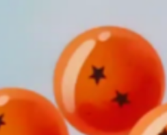
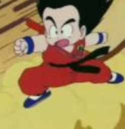
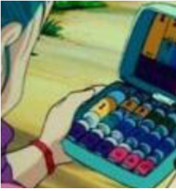

很久很久以前，曾流传着这样一个传说：世界各地散落着七颗龙珠，只要集齐这些珠子，就可召唤出神龙，而神龙可以帮助你实现任何一个愿望。 住在深山中的小悟空本领高强，偶然的机会他随时尚少女布尔玛走出大山，四处寻找传说中的龙珠。期间碰上好色的鬼仙人与乌龙、一碰女人就面红耳赤的乐平、自大的小和尚克林，经历了各种各样的艰险和奇遇，也惹出一连串爆笑的故事。当然还有许多邪恶的家伙为了满足私欲寻找龙珠，与小悟空他们展开了连番激斗…… 根据鸟山明同名漫画改编。
|  | 龙珠 | 龙珠的世界中共有五种类型龙珠，共有七个，每颗龙珠各自有一至七颗不等的红色五角星，向神龙许愿便可以达成任何愿望，为了寻找龙珠，少女时期的布尔玛发明了龙珠雷达，自此开启了寻找龙珠之旅。 |
|  | 筋斗云 | 龙珠 龙珠的世界中共有五种类型龙珠，共有七个，每颗龙珠各自有一至七颗不等的红色五角星，向神龙许愿便可以达成任何愿望，为了寻找龙珠，少女时期的布尔玛发明了龙珠雷达，自此开启了寻找龙珠之旅。 龙珠 龙珠 筋斗云 猫仙人送给青年龟仙人的礼物，只有内心纯善的人才能坐上去。本体是卡林塔外的一大片云。不怕子弹、炮弹等一切物理攻击，但会被魔族的攻击打散。龟仙人因好色而无法使用，于是送给了孙悟空；被魔族战士·丹巴林打散后，猫仙人从筋斗云本体中送给了悟空新的一块。 |
|  | 万能胶囊 | 布尔玛家族企业所研制开发的一种高科技产品，小小的胶囊可以装下摩托、汽车、飞机和房屋等。 |